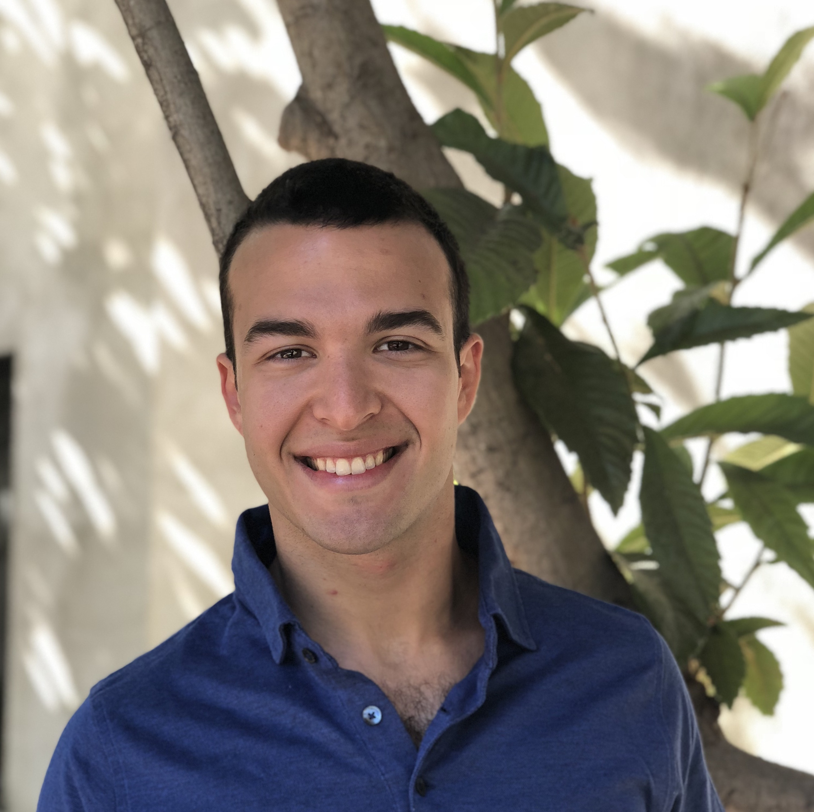

<div class="Content">
  <div class="two-column">
    
    <div class="bio">
      <p>
        Hello I'm Bora. Welcome to my website.
      </p>
      <p>
        I'm a product manager at <a href="https://viaduct.ai" target="_blank">viaduct.ai</a>, an observability platform for manufacturers and managers of industrial assets.  
        I received my M.S. in Computer Science in March 2020 and my B.S. in Mathematics in June 2019, both from Stanford University. My CV is available <a href="assets/Bora_resume_August_2022.pdf">here</a>.
      </p>
      <p>
        I also paint. You can see some of my recent work on my <a href="https://www.instagram.com/borauyumazturk/?hl=en">instagram</a>. My email is bora.uyumazturk@gmail.com.
      </p>
    </div>
  </div>
